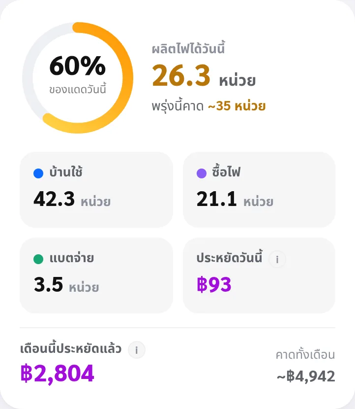
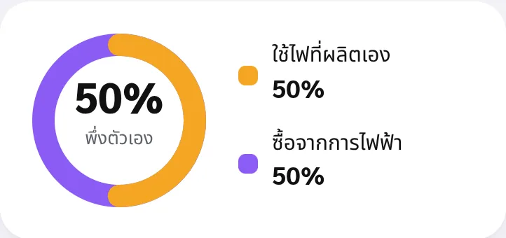

ดูระบบตามเวลาจริง
- หน้าหลัก — บ้าน 3D หมุนได้พร้อมเส้นไฟวิ่งตามทิศจริง, สถานะระบบ (ปกติ/แจ้งเตือน), ผลิตไฟวันนี้, เงินที่ประหยัดวันนี้ และ เดือนนี้ประหยัดแล้ว พร้อมตัวเลขคาดการณ์ทั้งเดือน
- แบตเตอรี่ตอนนี้ — กำลังชาร์จหรือจ่ายไฟเท่าไร และ เพราะอะไร เป็นประโยคสั้น ๆ, "ใช้ได้ถึงกี่โมง" / "เต็มราวกี่โมง" คิดจากความจุที่วัดจริงและจุดตัดที่เรียนรู้จากข้อมูลบ้านนี้ (ไม่ใช้ค่าบนฉลาก)
- วันนี้ — สรุปผลิต/ใช้/ซื้อ/ไฟย้อน, สัดส่วนพึ่งพาตัวเอง, การหมุนเวียนพลังงาน · สลับมุมมอง ทั้งวัน หรือ เที่ยงถึงเที่ยง (เห็นการใช้ไฟกลางวันกับกลางคืนแยกกัน)
- รายละเอียดเครื่อง — ค่าต่อเฟส / PV string / BMS, การแจ้งเตือนจริงจากอินเวอร์เตอร์, ตรวจสุขภาพระบบ (สมดุลเฟส · ช่องแบตเตอรี่ · แรงดัน/ความถี่ · อุณหภูมิ — เงียบเมื่อปกติ), แนวโน้ม 1–90 วัน
- หลายสถานี — บัญชีมีหลายระบบ มีปุ่มสลับระบบที่ด้านบนของจอให้อัตโนมัติ

